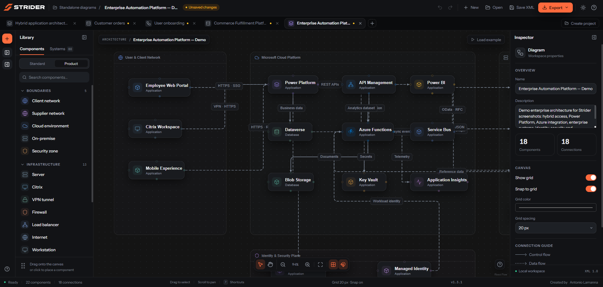
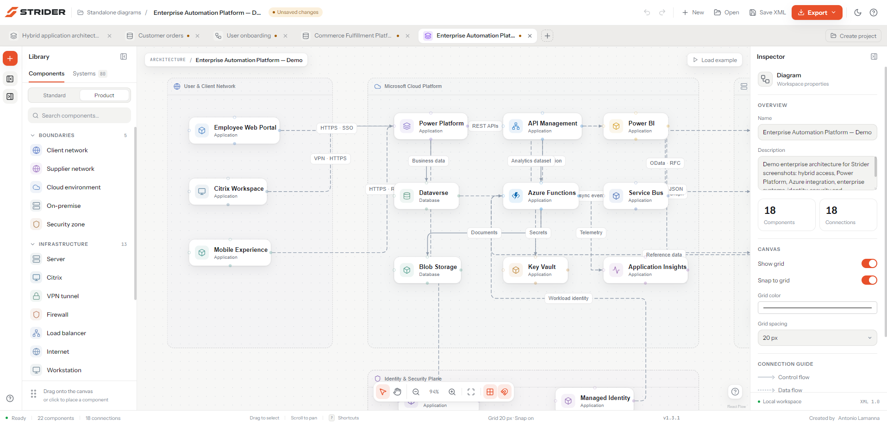

01 / ARCHITECTURE
See the system, not just the boxes.
Compose application landscapes with cloud services, business applications, databases, security zones and integration paths. Product-aware icons and labelled flows keep the design immediately readable.

